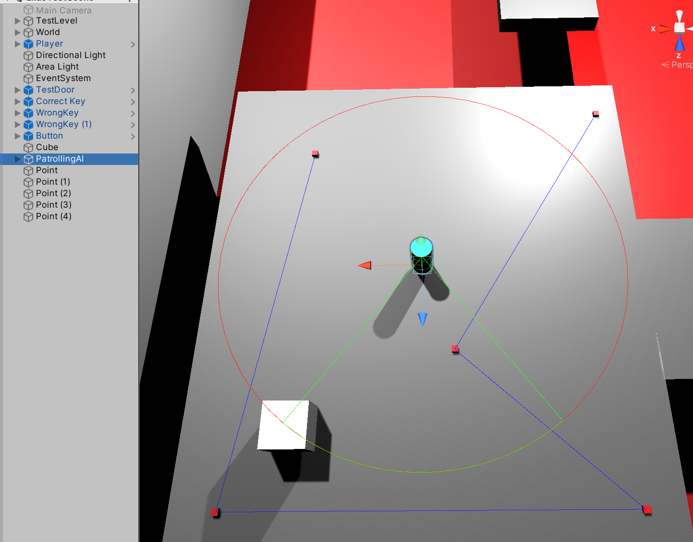
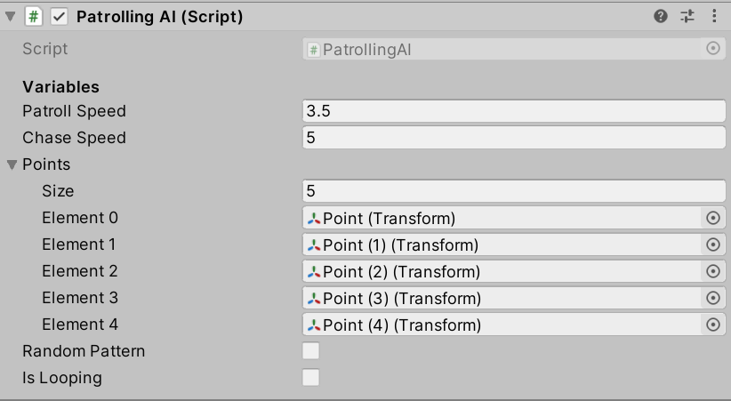
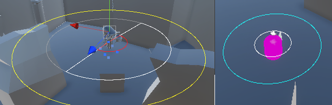
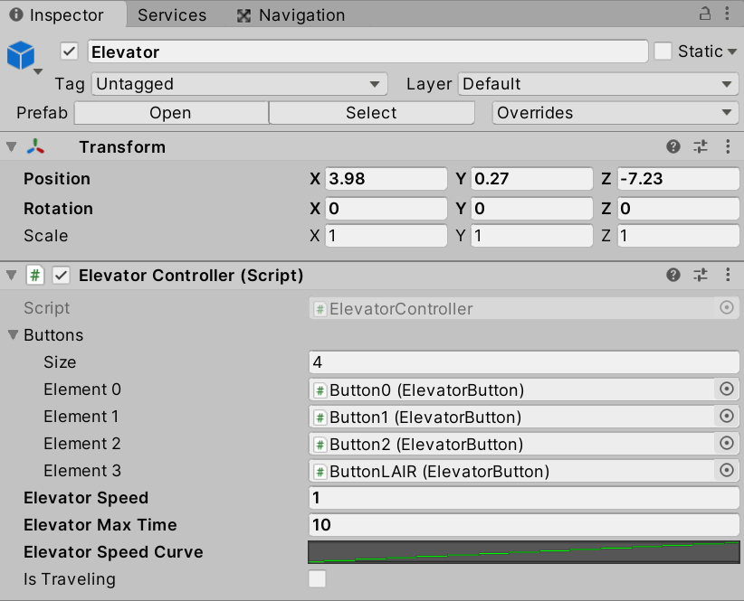
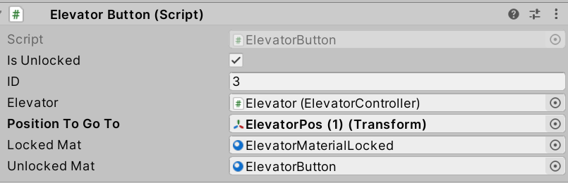

For Unseen Cradle, I worked on the character movement, various gameplay elements such as keys and an elevator system and collaborated with another programmer to develop the enemy AI. To streamline the customization process for designers, I also created visual tools to display the AI's detection range and pathing.
The AI in Unseen Cradle required a vision system to chase the player. To prevent it from being overpowered, we implemented a vision range and field of view (FOV) to limit where the AI could detect the player. I developed a editor tool that visually displayed the AI’s vision range and FOV in the game view while in the editor, with the visuals updating in real-time as the range or FOV settings were adjusted.


Additionally the AI could also hear the player. To visualize this, I implemented a similar tool to display the AI's hearing range. The player was able to make noise, and this was reflected live with a circle around the player that adjusted dynamically based on their actions, such as crouching or sprinting which affected the noise level. When the AI's hearing range and the player's noise circle overlapped, the AI would navigate towards the intersection point to search for the player.

Due to time constraints there wasn't enough time to create a separate tool for displaying elevator destinations. However to simplify customization I added a curve property, allowing animators to easily adjust the elevator's animation curve.
The elevator buttons were separate from the elevator itself. To streamline this the buttons should have been assignable within the elevator script, with button presses being handled directly from there.

